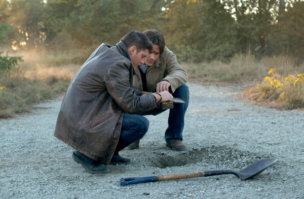

Перекресток дорог в сериале «Сверхъестественное»

Перекресток дорог – загадочный символ нашей жизни. О перекрестках всегда говорят с особой осторожностью. Он символизирует распутье, опасность и неизвестность. Перекрестков боятся водители и пешеходы, распутья опасается каждый из нас. Что и говорить, когда речь ведется о чем-то сверхъестественном, о потустороннем мире, который собирает на перекрестках всю ту негативную энергию, оставленную людьми…
Перекрестки в мире экзотерическом являются местом для магических ритуалов и религиозных обрядов. Свою загадочную историю перекрестки начинают в древности, когда русичи располагали в этих местах специальные столбы для праха умерших, а в племенах Африки, например, было традицией устанавливать на перекрестках алтари. Кельтские народы имеют до сих пор традицию в канун Дня всех Святых садиться на перекрестке и слушать звуки ветра. Якобы тот должен принести пророчество на предстоящий новый год.
А вот в древнегреческих мифах существовала богиня Геката – символ и покровительница перекрестка дорог. Для того чтобы задобрить строгую деву ей приносили жертвы животных на пересечениях путей. Она являлась за ними в ночь, когда луна светила ярче солнца. Богиню сопровождали огромные псы и нечистые духи. У Гекаты просили защиты от помешательства. Ведь именно эта болезнь по поверью была спровоцирована не упокоенными душами умерших.
Средневековье принесло в наш мир другую традицию. Так на пересечениях дорог колдуны и ведьмы вызывали дьяволов. Заключали с ними договоры при помощи жертвоприношений. И по сей день многие народы мира не забыли о таком способе общения с потусторонним миром. Бельгийцы, например, приходят по ночам к перекресткам с черной курицей. За таким подношением должен явится дьявол в человеческом обличии и исполнить желание. Сделка будет действительной семь лет.
Нередко в легендах срок действия такой договоренности может быть и девять лет и всю жизнь, но расплата за такие блага для человека будет страшной и беспощадной.
Перекрестки из сериала «Сверхъестественное»
Вызов дьявола при помощи некоего обряда на перекрестке фигурирует на протяжении всего сюжета сериала «Сверхъестественное». Первым таким упоминание является 1-я серия 2-го сезона «Когда придет мой смертный час». В этом эпизоде Винчестер старший попадает в аварию и оказывается на волосок от смерти. Спасти его удается лишь отцу Джону, который вызывает демона и заключает с ним договор о жизни Дина. Цена, которую пришлось заплатить отцу, была страшной.
Наиболее ярким проявлением дьявольских проделок и игры с людскими слабостями можно назвать 8-ю серию этого же сезона, когда каждый из погибших героев некогда заключил сделку с дьяволом перекрестка. Все, кто желал прославиться, разбогатеть или помочь близким, не смогли избежать настигнутой кары. Братьям Винчестерам удается спасти лишь мужчину, который в свое время избавил при помощи дьявола от смерти любимую супругу. В то время как братья находятся в поиске выхода для бесчисленных жертв своих желаний, Дин и сам чуть не попался в ловушку. Просто он очень хотел вернуть к жизни отца.
На встречу к Дину явился некий красноглазый дьявол – красавица брюнетка, забирающая взамен желания человеческую душу. Контракт с ней здесь заключается на 10 лет.
Она же забрала жизнь Роберта Джонсона, желающего прославиться, она же попала в конечном итоге в ловушку Дина и ей пришлось избавить от наказания Эвана – того самого любящего супруга.
В последствии Винчестеру старшему еще предстоит таким образом вытащить на свет белый Сэма, убитого Джейком Талли. Взамен он получает всего лишь год, один маленьких годик, за время которого братьям нужно решить, как избежать наказания. Игры дьяволов заставят попереживать зрителей сериала.